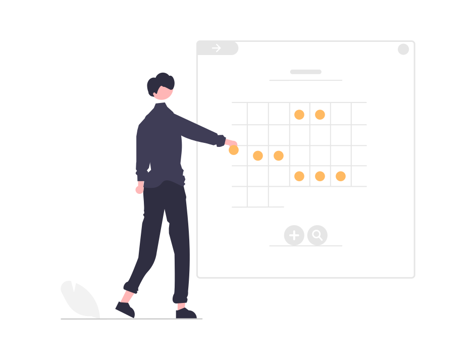

DESCRIPCIÓN DE LA PROPUESTA DEL PROYECTO ARTICULADOR

Programa enfocado en tutorías de forma presencial y virtual, donde se implementarán dos (2) módulos
iniciales: el primero para estudiantes que requerían una tutoría personalizada en algún tema y/o asignatura
en específico y el segundo modulo para los diferentes tutores, donde se genere un contacto directo para las
reuniones las partes.
Se plantea que adicionalmente al pago que el aprendiz le realizara al tutor encargado de su tutoría, el cual
se realizara por medio de la plataforma, se manejara puntos de calificación por clase, los cuales serán
adquiridos por los estudiantes, también, estos puntos se podrán sumar a los puntos obtenidos por el
estudiante por medio de otras tutorías y cuando tenga una cierta cantidad de puntos (pendiente por acordar
estas cantidades) será posible redimirlos en clases gratuitas u otros beneficios.
Como resultado de diferentes investigaciones y experiencias propias de cada uno de los
integrantes del proyecto, se ha podido concluir que:
1. Gracias a la falta de conocimiento de plataformas o herramientas para generar un contacto con alguna
persona capacitada en temáticas generales, los estudiantes o interesados en profundizar sus estudios se ven
obligados a apoyarse netamente de tutoriales en internet o artículos, y esto lleva a generar vacíos ya que
hay temáticas que se recomienda una explicación más personalizada para poder comprender los conceptos y
aplicarlos de manera correcta.
2. Realizando un estudio de mercado, se evidencio que algunas personas con aptitudes suficientes para
enseñar o complementar los conocimientos de los estudiantes, no tienen fácil acceso a un trabajo específico
si no son profesionales, Esto se ve reflejado en Colombia por los medios de comunicación tales como:
(Economía y Negocios, 2021) “En enero de este año la tasa de desempleo en el país, de acuerdo con el informe
sobre mercado laboral presentado por el Departamento Nacional de Estadísticas (DANE) este viernes, se ubicó
en 17,3 %”.
REQUISITOS
1. (Diego) Se define un registro para estudiantes y tutores, donde cada uno cumple una función en específico.
2. (Nicolás) Se requiere tener información personal sobre el usuario, como la edad, para permitir ciertas
funciones.
3. (Juan) Es necesario implementar un calendario para la asignación de las respectivas tutorías, permitiendo al
tutor conocer todas sus tutorías asignadas, y por parte del estudiante, ver la disponibilidad que tiene el
tutor.
4. Se requiere una base de datos para guardar toda la información de los usuarios.
5. Se requiere un sistema de valoración al tutor por parte del estudiante.
6. (Andrea) Se requiere ordenar de forma descendente a los tutores según su valoración recibida.
7. Se requiere filtrar por áreas académicas, zonas geográficas y horarios.
8. Se requiere notificar vía correo electrónico y por medio de la plataforma, cada vez se asigne una tutoría o
se presente algún inconveniente.
9. Se requiere habilitar carga de archivos por parte del tutor como material de apoyo.
10. Se requiere un sistema de evaluación de aptitudes, académicas y psicológicas.
11. Se requiere que el tutor pueda ver la información básica del estudiante.
12. (Ebert) Se requiere un botón de búsqueda que permita al estudiante filtrar las tutorías que desea tomar.
13. El estudiante debe asignarse un tutor.
14. Se debe visualizar el costo de la tutoría.
15. El sistema debe permitir el pago de la tutoría por una pasarela de pago.
16. Las tutorías se realizarán por horas.
17. Al finalizar cada tutoría, el estudiante deberá valorar al tutor, y por esto recibirá una cantidad de puntos
que pueden ser redimidos.